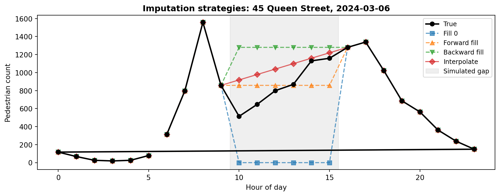
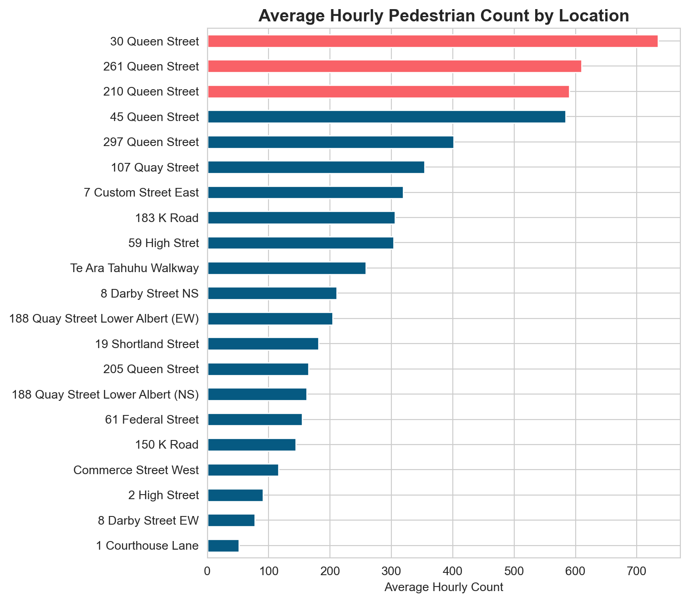
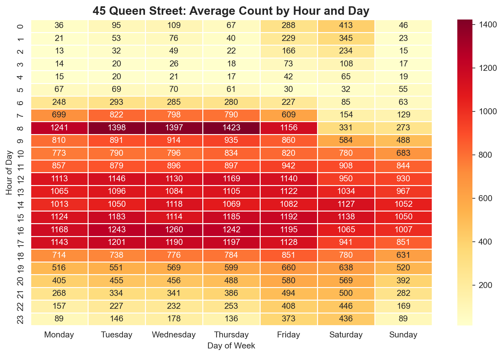
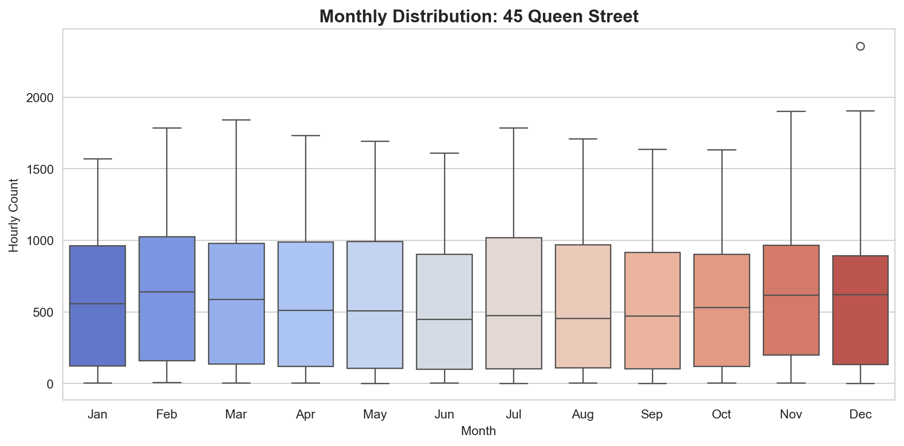

This lab takes you through a complete data analysis workflow using real hourly pedestrian counts from 21 sensor locations across Auckland’s city centre in 2024. The data are sourced from Heart of the City and record how many people passed each sensor during every hour of the year.
By the end of this lab, you will have practised the core skills from Sections 2.1, 2.2, and 2.3 of the course textbook, all applied to one real-world dataset.
Duration: approximately 2 hours (or longer if you complete all extension tasks)
What you need:
Python 3.10+ with pandas, matplotlib, and seaborn installed
The file akl_ped-2024.csv (https://raw.githubusercontent.com/dataandcrowd/GISCI343/refs/heads/main/pedestrians/akl_ped-2024.csv)
A Python script, Jupyter notebook, or Quarto document to write your code
Structure:
Section
Topic
Approx. Time
2.1
Python foundations review
30 min
2.2
DataFrames and pandas
60 min
2.3
Data visualisation
30 min
—
Final challenge
20 min
Section 2.1: Python Foundations Review
Before loading the pedestrian dataset, let us ensure you are comfortable with the Python building blocks that underpin everything in Parts 2.2 and 2.3.
Task 1: Variables and Data Types
Create variables that describe one of the pedestrian sensors. Use appropriate types: str for text, int for whole numbers, float for decimal numbers, and bool for true/false.
Sensor: 45 Queen Street
ID: 5
Average hourly count: 487.3
Active: True
Type of avg_hourly_count: <class 'float'>
f-strings
The f"..." syntax (formatted string literals) lets you embed variables directly inside text. The expression inside {} is evaluated and inserted. This is the most readable way to build output messages in Python.
Your turn: Create variables for a different sensor location. Include the sensor’s street name, the number of hours it records per day (integer), and whether it has any missing data (boolean). Print all values using f-strings.
Task 2: Lists
Lists store ordered sequences of items. They are fundamental to working with collections of sensor names, count values, and time periods.
# Auckland CBD sensor locationslocations = ["107 Quay Street","45 Queen Street","30 Queen Street","2 High Street","150 K Road"]# Access by index (0-based)print(f"First location: {locations[0]}")print(f"Last location: {locations[-1]}")print(f"Total locations: {len(locations)}")# Slice to get a subsetprint(f"Middle three: {locations[1:4]}")
First location: 107 Quay Street
Last location: 150 K Road
Total locations: 5
Middle three: ['45 Queen Street', '30 Queen Street', '2 High Street']
# Hourly counts for 107 Quay Street on 1 Jan 2024 (6am-9pm)counts = [78, 201, 644, 394, 861, 1283, 1335, 1423, 1159, 1005, 995, 780, 602, 498, 310, 195]hours =list(range(6, 22))print(f"Hours recorded: {len(counts)}")print(f"Maximum count: {max(counts)}")print(f"Minimum count: {min(counts)}")print(f"Total daily: {sum(counts):,}")
Hours recorded: 16
Maximum count: 1423
Minimum count: 78
Total daily: 11,763
Your turn: Create a new list that contains only the counts above 500. Use a for loop and an if statement to build the list. How many hours had more than 500 pedestrians?
Task 3: Loops
Loops let you repeat operations across collections. When working with pedestrian data, you will frequently iterate through locations, time periods, or rows of a table.
locations = ["107 Quay Street", "45 Queen Street", "30 Queen Street", "2 High Street", "150 K Road"]print("=== Sensor Locations ===")for loc in locations:print(f" - {loc}")print(f"\nTotal locations: {len(locations)}")
=== Sensor Locations ===
- 107 Quay Street
- 45 Queen Street
- 30 Queen Street
- 2 High Street
- 150 K Road
Total locations: 5
# Loop through a list of countspeak_counts = [1423, 1076, 1245, 129, 381]total =0for count in peak_counts: total = total + countprint(f" Adding {count:,} -> Running total: {total:,}")print(f"\nGrand total: {total:,}")
Your turn: Write a loop that prints only the locations with a peak count above 500. Hint: use zip(locations, peak_counts) to pair each name with its count.
Task 4: Conditionals
Conditionals let you make decisions in code. In pedestrian analysis, you frequently need to classify counts, flag anomalies, or filter by thresholds.
=== Traffic Classification ===
1,423 pedestrians -> HIGH
1,076 pedestrians -> HIGH
1,245 pedestrians -> HIGH
129 pedestrians -> LOW
381 pedestrians -> MEDIUM
141 pedestrians -> LOW
176 pedestrians -> LOW
# Count how many locations fall into each categoryhigh =0med =0low =0for count in counts:if count >1000: high = high +1elif count >300: med = med +1else: low = low +1print(f"High traffic: {high} locations")print(f"Medium traffic: {med} locations")print(f"Low traffic: {low} locations")
High traffic: 3 locations
Medium traffic: 1 locations
Low traffic: 3 locations
Your turn: Change the thresholds so that “HIGH” is above 800, “MEDIUM” is 200 to 800, and “LOW” is below 200. How does the classification change?
Task 5: Combining Concepts
Now combine variables, lists, loops, and conditionals in a single task.
# Hourly data for 107 Quay Street (1 Jan 2024, 6am-9pm)counts = [78, 201, 644, 394, 861, 1283, 1335, 1423, 1159, 1005, 995, 780, 602, 498, 310, 195]# Find the peak count and off-peak hourspeak_count =0off_peak = []for count in counts:if count > peak_count: peak_count = countif count <300: off_peak.append(count)print(f"Peak count: {peak_count:,} pedestrians")print(f"Number of off-peak hours (< 300): {len(off_peak)}")print(f"Average count: {sum(counts) /len(counts):,.0f}")
Peak count: 1,423 pedestrians
Number of off-peak hours (< 300): 3
Average count: 735
Your turn: Write a loop that builds a new list containing only the counts above 1,000. How many hours had more than 1,000 pedestrians?
Section 2.2: DataFrames and Pandas
Now we move from basic Python to structured data analysis with pandas. Everything you practised in Section 2.1 (variables, lists, loops, conditionals) will reappear here, but pandas gives you far more powerful tools for working with tabular data.
Task 6: Importing Libraries and Reading Data
import pandas as pdimport numpy as np
The import ... as ... syntax loads an external library and assigns it a short alias. pd for pandas and np for numpy are universal conventions that you will see in virtually every data science tutorial and textbook.
The .shape attribute returns a tuple of (rows, columns). With 5,856 rows and 23 columns, each row represents one hour at one date, and the 23 columns include Date, Time, and 21 sensor locations.
ped.head()
Date
Time
107 Quay Street
Te Ara Tahuhu Walkway
Commerce Street West
7 Custom Street East
45 Queen Street
30 Queen Street
19 Shortland Street
2 High Street
...
210 Queen Street
205 Queen Street
8 Darby Street EW
8 Darby Street NS
261 Queen Street
297 Queen Street
150 K Road
183 K Road
188 Quay Street Lower Albert (EW)
188 Quay Street Lower Albert (NS)
0
2024-01-01 00:00:00
6:00-6:59
78.0
53.0
24.0
9.0
87.0
67.0
10.0
11.0
...
61.0
16.0
8.0
22.0
75.0
77.0
15.0
68.0
53.0
115.0
1
2024-01-01 00:00:00
7:00-7:59
201.0
39.0
29.0
38.0
143.0
123.0
12.0
21.0
...
97.0
31.0
6.0
21.0
93.0
73.0
21.0
56.0
74.0
81.0
2
2024-01-01 00:00:00
8:00-8:59
644.0
55.0
50.0
52.0
243.0
291.0
62.0
23.0
...
196.0
46.0
9.0
34.0
186.0
157.0
31.0
75.0
132.0
150.0
3
2024-01-01 00:00:00
9:00-9:59
394.0
94.0
71.0
84.0
399.0
468.0
54.0
26.0
...
279.0
106.0
20.0
45.0
305.0
245.0
36.0
79.0
185.0
205.0
4
2024-01-01 00:00:00
10:00-10:59
861.0
216.0
120.0
143.0
774.0
755.0
128.0
76.0
...
604.0
187.0
36.0
88.0
576.0
381.0
84.0
158.0
287.0
239.0
5 rows × 23 columns
Your turn: Use ped.tail() to see the last 5 rows. What date and time does the dataset end on?
Task 7: Exploring the Data
Before any analysis, you need to understand the structure, types, and quality of your data.
ped.info()
<class 'pandas.core.frame.DataFrame'>
RangeIndex: 8795 entries, 0 to 8794
Data columns (total 23 columns):
# Column Non-Null Count Dtype
--- ------ -------------- -----
0 Date 8784 non-null object
1 Time 8783 non-null object
2 107 Quay Street 8783 non-null float64
3 Te Ara Tahuhu Walkway 8783 non-null float64
4 Commerce Street West 8783 non-null float64
5 7 Custom Street East 8783 non-null float64
6 45 Queen Street 8783 non-null float64
7 30 Queen Street 8783 non-null float64
8 19 Shortland Street 8783 non-null float64
9 2 High Street 8783 non-null float64
10 1 Courthouse Lane 8783 non-null float64
11 61 Federal Street 8783 non-null float64
12 59 High Stret 8783 non-null float64
13 210 Queen Street 8783 non-null float64
14 205 Queen Street 8783 non-null float64
15 8 Darby Street EW 8783 non-null float64
16 8 Darby Street NS 8783 non-null float64
17 261 Queen Street 8783 non-null float64
18 297 Queen Street 8783 non-null float64
19 150 K Road 8783 non-null float64
20 183 K Road 8783 non-null float64
21 188 Quay Street Lower Albert (EW) 8783 non-null float64
22 188 Quay Street Lower Albert (NS) 8783 non-null float64
dtypes: float64(21), object(2)
memory usage: 1.5+ MB
The .info() method tells you: the number of non-null values per column (which reveals missing data), the data type of each column, and the memory usage. Notice that Date is stored as an object (text), not as a datetime. We will fix that shortly.
ped.describe()
107 Quay Street
Te Ara Tahuhu Walkway
Commerce Street West
7 Custom Street East
45 Queen Street
30 Queen Street
19 Shortland Street
2 High Street
1 Courthouse Lane
61 Federal Street
...
210 Queen Street
205 Queen Street
8 Darby Street EW
8 Darby Street NS
261 Queen Street
297 Queen Street
150 K Road
183 K Road
188 Quay Street Lower Albert (EW)
188 Quay Street Lower Albert (NS)
count
8783.000000
8783.000000
8783.000000
8783.000000
8783.000000
8783.000000
8783.000000
8783.000000
8783.000000
8783.000000
...
8783.000000
8783.000000
8783.000000
8783.000000
8783.000000
8783.000000
8783.000000
8783.000000
8783.000000
8783.000000
mean
353.719003
258.291928
115.975293
319.424001
584.034385
734.438575
181.254355
90.696117
51.633383
154.845269
...
589.641011
164.907776
77.187863
210.860412
610.111921
401.655699
143.848343
306.153364
204.309348
162.093134
std
330.970832
245.775336
98.407779
267.004082
457.874348
582.625755
164.456019
74.576693
39.821827
112.915587
...
530.130768
255.473764
60.443651
157.516495
508.645900
310.911067
96.362818
194.502540
184.535930
168.758941
min
0.000000
0.000000
0.000000
0.000000
1.000000
0.000000
0.000000
0.000000
0.000000
0.000000
...
0.000000
0.000000
0.000000
0.000000
0.000000
0.000000
1.000000
2.000000
0.000000
0.000000
25%
78.000000
33.000000
23.000000
67.000000
121.000000
162.000000
32.000000
21.000000
13.000000
41.000000
...
97.000000
9.000000
30.000000
65.500000
110.000000
90.000000
51.000000
118.000000
46.000000
29.000000
50%
268.000000
182.000000
100.000000
287.000000
540.000000
698.000000
147.000000
82.000000
49.000000
153.000000
...
449.000000
73.000000
70.000000
194.000000
546.000000
400.000000
151.000000
320.000000
174.000000
115.000000
75%
531.000000
418.500000
186.000000
512.000000
963.000000
1200.500000
298.000000
139.500000
79.000000
238.000000
...
997.000000
195.000000
108.000000
328.500000
1038.000000
644.000000
214.000000
463.000000
292.000000
238.000000
max
2023.000000
1698.000000
784.000000
1894.000000
2358.000000
2601.000000
898.000000
579.000000
243.000000
779.000000
...
2422.000000
1716.000000
791.000000
1455.000000
3059.000000
2430.000000
1021.000000
1642.000000
1257.000000
1072.000000
8 rows × 21 columns
.describe() provides summary statistics for all numeric columns: count, mean, standard deviation, min, max, and quartiles. Scan through these values. Are there any suspiciously low counts (possibly sensor outages) or unusually high values (possible data errors)?
# How many sensor locations?sensor_cols = ped.columns[2:] # Everything after Date and Timeprint(f"Sensor locations: {len(sensor_cols)}")print(f"\nColumn names:")for col in sensor_cols:print(f" - {col}")
Sensor locations: 21
Column names:
- 107 Quay Street
- Te Ara Tahuhu Walkway
- Commerce Street West
- 7 Custom Street East
- 45 Queen Street
- 30 Queen Street
- 19 Shortland Street
- 2 High Street
- 1 Courthouse Lane
- 61 Federal Street
- 59 High Stret
- 210 Queen Street
- 205 Queen Street
- 8 Darby Street EW
- 8 Darby Street NS
- 261 Queen Street
- 297 Queen Street
- 150 K Road
- 183 K Road
- 188 Quay Street Lower Albert (EW)
- 188 Quay Street Lower Albert (NS)
Spot the Typo
Look carefully at the column names. One of them has a spelling error: “59 High Stret” instead of “59 High Street”. Real-world data is rarely perfectly clean. We will leave it as-is for now, but in a formal analysis you might rename it with ped.rename(columns={"59 High Stret": "59 High Street"}, inplace=True).
Your turn: Which sensor location has the highest mean count? Which has the most missing values? Use .describe() and .isna().sum() to find out.
Task 8: Selecting Columns and Rows
Selecting subsets of data is one of the most frequent operations in pandas.
# Select a single column (returns a Series)queen45 = ped["45 Queen Street"]print(type(queen45))print(queen45.head())
# Select by position with .iloc[]# First 5 rows, first 4 columnsped.iloc[0:5, 0:4]
Date
Time
107 Quay Street
Te Ara Tahuhu Walkway
0
2024-01-01 00:00:00
6:00-6:59
78.0
53.0
1
2024-01-01 00:00:00
7:00-7:59
201.0
39.0
2
2024-01-01 00:00:00
8:00-8:59
644.0
55.0
3
2024-01-01 00:00:00
9:00-9:59
394.0
94.0
4
2024-01-01 00:00:00
10:00-10:59
861.0
216.0
# Select by label with .loc[]# All rows, specific columnsped.loc[:, ["Date", "Time", "150 K Road"]].head()
Date
Time
150 K Road
0
2024-01-01 00:00:00
6:00-6:59
15.0
1
2024-01-01 00:00:00
7:00-7:59
21.0
2
2024-01-01 00:00:00
8:00-8:59
31.0
3
2024-01-01 00:00:00
9:00-9:59
36.0
4
2024-01-01 00:00:00
10:00-10:59
84.0
Your turn: Create a subset containing only the Quay Street sensors (107 Quay Street, 188 Quay Street Lower Albert EW and NS) plus Date and Time. How many columns does your subset have?
Task 9: Filtering Rows with Boolean Indexing
Boolean indexing is the pandas equivalent of the if statements you wrote in Section 2.1, but applied to entire columns at once.
# Where was 45 Queen Street count above 1000?high_traffic = ped[ped["45 Queen Street"] >1000]print(f"Hours with >1000 pedestrians at 45 Queen St: {len(high_traffic)}")
Hours with >1000 pedestrians at 45 Queen St: 1968
# Multiple conditions: use & (and), | (or), with parenthesesbusy_both = ped[ (ped["45 Queen Street"] >500) & (ped["30 Queen Street"] >500)]print(f"Hours where BOTH Queen St sensors > 500: {len(busy_both)}")
Hours where BOTH Queen St sensors > 500: 4527
# The .query() method is an alternative syntax (often more readable)result = ped.query("`45 Queen Street` > 1000 and `30 Queen Street` > 800")print(f"Both high: {len(result)} rows")
Both high: 1964 rows
Backticks in .query()
When column names contain spaces, wrap them in backticks inside .query() strings: `45 Queen Street`. This is a common source of errors.
Your turn: Filter the dataset to find all rows where at least one sensor recorded more than 2,000 pedestrians in a single hour. Hint: you can compute a row maximum with ped[sensor_cols].max(axis=1) and use that as a filter condition.
Task 10: Creating New Columns
Adding computed columns transforms raw data into analysis-ready features.
# The CSV contains a "Daylight Savings" marker row and 11 blank separator rows.# Drop all non-data rows before converting.ped = ped.dropna(subset=["Date", "Time"]).copy()ped = ped[ped["Date"] !="Daylight Savings"].copy()# Convert Date to datetime typeped["Date"] = pd.to_datetime(ped["Date"])# Extract temporal featuresped["month"] = ped["Date"].dt.monthped["day_of_week"] = ped["Date"].dt.day_name()ped["day_num"] = ped["Date"].dt.dayofweek # 0=Monday, 6=Sunday# Extract hour from the Time columnped["hour"] = ped["Time"].str.split(":").str[0].astype(int)ped[["Date", "Time", "month", "day_of_week", "hour"]].head(10)
Date
Time
month
day_of_week
hour
0
2024-01-01
6:00-6:59
1
Monday
6
1
2024-01-01
7:00-7:59
1
Monday
7
2
2024-01-01
8:00-8:59
1
Monday
8
3
2024-01-01
9:00-9:59
1
Monday
9
4
2024-01-01
10:00-10:59
1
Monday
10
5
2024-01-01
11:00-11:59
1
Monday
11
6
2024-01-01
12:00-12:59
1
Monday
12
7
2024-01-01
13:00-13:59
1
Monday
13
8
2024-01-01
14:00-14:59
1
Monday
14
9
2024-01-01
15:00-15:59
1
Monday
15
# Create a total count across all sensorsped["total_count"] = ped[sensor_cols].sum(axis=1)print(f"Highest single-hour total: {ped['total_count'].max():,.0f}")print(f"Lowest single-hour total: {ped['total_count'].min():,.0f}")
Your turn: Create a boolean column called is_weekend that is True for Saturday and Sunday and False otherwise. Then filter to show only weekend rows and check how many there are.
Task 11: The Importance of .copy()
When you slice a DataFrame, pandas sometimes returns a view (a window into the original) rather than an independent copy. Modifying a view can accidentally change your original data.
# Safe: always use .copy() when creating subsets you will modifyjanuary = ped[ped["month"] ==1].copy()january["season"] ="Summer"# The original ped DataFrame is unaffectedprint(f"'season' in ped columns: {'season'in ped.columns}")print(f"'season' in january columns: {'season'in january.columns}")
'season' in ped columns: False
'season' in january columns: True
Rule of Thumb
If you plan to add or modify columns on a subset, always call .copy() first. This avoids the SettingWithCopyWarning and prevents silent data corruption.
Task 12: Grouping and Aggregation
.groupby() splits data into groups, applies a function, and combines results. This is how you answer questions like “what is the average count per month?” or “which hour is busiest on weekdays?”
# Average hourly count by month for 45 Queen Streetmonthly_avg = ped.groupby("month")["45 Queen Street"].mean()print(monthly_avg.round(0))
# Average by hour across all sensorshourly_avg = ped.groupby("hour")[sensor_cols.tolist()].mean()hourly_total = hourly_avg.sum(axis=1)print(f"\nBusiest hour (all sensors): {hourly_total.idxmax()}:00")print(f"Quietest hour (all sensors): {hourly_total.idxmin()}:00")
Your turn: Group by day_of_week and calculate the mean total_count. Which day has the highest average footfall across all sensors? Is it a weekday or weekend day?
Task 13: Reshaping Data (Wide to Long)
The CSV is in wide format: each sensor is its own column. Many analysis and plotting tasks work better with long format, where each row represents a single sensor-time observation.
# Now we can easily group by locationlocation_avg = ped_long.groupby("location")["count"].mean().sort_values(ascending=False)print("Top 5 busiest locations (average hourly count):")print(location_avg.head().round(0))
Top 5 busiest locations (average hourly count):
location
30 Queen Street 734.0
261 Queen Street 610.0
210 Queen Street 590.0
45 Queen Street 584.0
297 Queen Street 402.0
Name: count, dtype: float64
Your turn: Using ped_long, find the average hourly count for each location during weekday lunchtime hours (12:00 and 13:00, Monday to Friday). Which location is busiest at lunchtime?
Task 14: Handling Missing Data
Real sensor data almost always has gaps: equipment failures, maintenance windows, or transmission errors. After our earlier cleaning step (dropping blank rows and the Daylight Savings marker), this particular dataset happens to be complete. Let us verify that first, and then deliberately introduce gaps so we can practise imputation strategies you will need in other projects.
# Check for missing values across all sensor columnsmissing = ped[sensor_cols].isna().sum()print(f"Total missing cells: {missing.sum()}")
Total missing cells: 0
Good news: zero missing values. But you will rarely be this lucky. To practise imputation, we will create a copy of one sensor’s data and knock out a block of hours to simulate a sensor outage.
# Simulate a sensor outage: remove hours 10-15 on a busy weekdaysensor ="45 Queen Street"sim = ped[["Date", "Time", "hour", sensor]].copy()# Pick a Wednesday in March (a busy weekday)target_date = pd.Timestamp("2024-03-06")mask = (sim["Date"] == target_date) & (sim["hour"].between(10, 15))print(f"Rows to blank out: {mask.sum()}")print(f"True values we are hiding:")print(sim.loc[mask, ["hour", sensor]].to_string(index=False))# Replace with NaNsim.loc[mask, sensor] = np.nan
Rows to blank out: 6
True values we are hiding:
hour 45 Queen Street
10 514.0
11 647.0
12 799.0
13 869.0
14 1130.0
15 1159.0
Now we have a realistic gap: six consecutive hours of missing data during peak time, but we know the true values. Let us see how different imputation strategies recover them.
# Compute the error for each strategyfor strategy in ["Zero", "Fwd Fill", "Bck Fill", "Interpolate"]: mae = (comparison[strategy] - comparison["True"]).abs().mean()print(f" {strategy:12s} Mean Absolute Error = {mae:,.0f}")
Zero Mean Absolute Error = 853
Fwd Fill Mean Absolute Error = 200
Bck Fill Mean Absolute Error = 427
Interpolate Mean Absolute Error = 216
# Visualise the gap and each strategy's attempt to fill itimport matplotlib.pyplot as pltday = sim[sim["Date"] == target_date].copy()fig, ax = plt.subplots(figsize=(10, 4))# True values (from original data)true_day = ped.loc[ped["Date"] == target_date, ["hour", sensor]]ax.plot(true_day["hour"], true_day[sensor], "ko-", label="True", linewidth=2, zorder=5)# Each strategyax.plot(day["hour"], day["fill_zero"], "s--", label="Fill 0", alpha=0.7)ax.plot(day["hour"], day["fill_ffill"], "^--", label="Forward fill", alpha=0.7)ax.plot(day["hour"], day["fill_bfill"], "v--", label="Backward fill", alpha=0.7)ax.plot(day["hour"], day["fill_interp"], "D-", label="Interpolate", alpha=0.7)# Shade the gapax.axvspan(9.5, 15.5, color="grey", alpha=0.12, label="Simulated gap")ax.set_title(f"Imputation strategies: {sensor}, {target_date.date()}", fontweight="bold")ax.set_xlabel("Hour of day")ax.set_ylabel("Pedestrian count")ax.legend(fontsize=9)plt.tight_layout()plt.show()

The black line shows the true values we hid. Filling with zero massively undercounts during peak hours. Forward fill flatlines at the 9 AM value, missing the lunchtime surge entirely. Backward fill flatlines at the 4 PM value, which overshoots the morning but undershoots lunch. Interpolation draws a straight line between 9 AM and 4 PM, which at least captures the general trend but still misses the midday peak.
Which Strategy?
There is no single correct answer. Filling with zero assumes sensor silence means no pedestrians, which can severely undercount during busy periods. Forward and backward fill create flat lines that ignore temporal patterns. Interpolation is often a reasonable middle ground for short gaps but struggles with longer ones where the underlying pattern is non-linear. For time series with strong daily rhythms (like pedestrian counts), more sophisticated approaches such as filling with the average for the same hour and day of week can perform better. Always document and justify your choice.
Your turn: Try a smarter imputation: for each missing hour, fill with the mean count for that same hour across all other Wednesdays. How does the error compare to simple interpolation?
Task 15: Merging DataFrames
In real analyses, you often need to combine data from multiple sources. This task simulates merging sensor metadata with count data.
# Now we can group by zonezone_avg = merged.groupby("zone")["count"].mean().sort_values(ascending=False)print("Average hourly count by zone:")print(zone_avg.round(0))
Average hourly count by zone:
zone
CBD Core 470.0
Waterfront 354.0
K Road 225.0
Name: count, dtype: float64
Join Types
how="inner" keeps only locations that appear in both DataFrames. Use how="left" to keep all rows from the left DataFrame (adding NaN where no match exists), how="right" for the opposite, and how="outer" to keep everything from both sides.
Your turn: Add more locations to the metadata table (at least 5 more sensors). Assign each to a zone. Re-run the merge and groupby to see how the zone averages change.
Section 2.3: Data Visualisation
With your data loaded, cleaned, and transformed, it is time to make it visual. Visualisation reveals patterns that summary statistics alone cannot convey.
Task 16: Setup and Line Plot
import matplotlib.pyplot as pltimport seaborn as sns# Clean style for all plotssns.set_style("whitegrid")
What patterns can you see? Look for weekly cycles (dips on weekends), seasonal trends (lower in winter), and any anomalous spikes or drops.
Your turn: Create the same plot for “107 Quay Street” and “150 K Road” on the same axes. Use different colours and add a legend. Do waterfront and K Road sensors show the same seasonal pattern as Queen Street?
Task 17: Bar Chart Comparing Locations
# Average hourly count per locationavg_by_location = ped[sensor_cols].mean().sort_values()fig, ax = plt.subplots(figsize=(8, 7))colours = ["#F96167"if v >= avg_by_location.nlargest(3).min() else"#065A82"for v in avg_by_location]avg_by_location.plot.barh(ax=ax, color=colours)ax.set_title("Average Hourly Pedestrian Count by Location", fontsize=14, fontweight="bold")ax.set_xlabel("Average Hourly Count")plt.tight_layout()plt.show()

The three sensors with the highest average counts are highlighted in coral. Note the large variation across locations: some sensors record hundreds of people per hour while others see only a few dozen.
Your turn: Create a similar bar chart but showing the standard deviation of counts instead of the mean. Do the most variable locations correspond to the busiest ones?
Task 18: Heatmap (Hour vs Day of Week)
A heatmap is an excellent way to see two-dimensional patterns. Here we will plot average pedestrian counts by hour of day and day of week.
# Pivot table: hour (rows) x day_of_week (columns)pivot = ped.pivot_table( values="45 Queen Street", index="hour", columns="day_of_week", aggfunc="mean")# Reorder days logicallyday_order = ["Monday", "Tuesday", "Wednesday", "Thursday", "Friday", "Saturday", "Sunday"]pivot = pivot[day_order]fig, ax = plt.subplots(figsize=(9, 6))sns.heatmap(pivot, cmap="YlOrRd", annot=True, fmt=".0f", linewidths=0.5, ax=ax)ax.set_title("45 Queen Street: Average Count by Hour and Day", fontsize=14, fontweight="bold")ax.set_ylabel("Hour of Day")ax.set_xlabel("Day of Week")plt.tight_layout()plt.show()

This heatmap reveals the temporal rhythm of the street: strong weekday lunchtime peaks, lower weekend activity, and near-zero counts in the early morning hours.
Your turn: Create the same heatmap for “150 K Road”. How does K Road’s temporal pattern differ from Queen Street? Does the weekend pattern differ?
/var/folders/th/wzvst6957_v02h6ztkc7qxw5_3lzg7/T/ipykernel_63335/1570749334.py:7: FutureWarning:
Passing `palette` without assigning `hue` is deprecated and will be removed in v0.14.0. Assign the `x` variable to `hue` and set `legend=False` for the same effect.

Box plots show the distribution (median, quartiles, and outliers) for each month. This helps you see whether the variability changes seasonally, not just the average.
Your turn: Create box plots grouped by day_of_week instead of month. Use the order=day_order parameter to keep days in logical sequence.
Task 20: Multi-Panel Figure
Combining multiple plots into a single figure is essential for reports and presentations.
Your turn: Replace one of the four panels with a visualisation of your own design. Ideas: a scatter plot of weekday vs weekend averages by location, a stacked area chart of hourly counts, or a violin plot by month.
Final Challenge
Putting It All Together
Using everything from Parts 2.1, 2.2, and 2.3, produce a short analysis (in the same notebook) that answers the following question:
How do pedestrian patterns differ between weekdays and weekends across Auckland CBD, and do these differences vary by location type?
Your analysis should include:
Data preparation (Section 2.1 & 2.2): Load the CSV, create temporal features, handle any missing values, and create a long-format version with zone metadata.
At least three different visualisations (Section 2.3):
One comparing weekday vs weekend patterns over time (e.g., line plot or area chart)
One comparing locations or zones (e.g., grouped bar chart or heatmap)
One of your own design that adds insight
Written interpretation: Below each figure, write 2-3 sentences explaining what the visualisation shows and what it means for understanding pedestrian behaviour in Auckland.
A concluding paragraph summarising your key findings and suggesting one follow-up question that could be investigated with additional data (e.g., weather, events, public transport schedules).
Suggested Zone Classification
You can use or modify this categorisation for the merge:
Zone
Sensors
Waterfront
107 Quay Street, Te Ara Tahuhu Walkway, 188 Quay St (both)
Commerce Street West, 7 Custom Street East, 19 Shortland Street, 2 High Street, 1 Courthouse Lane, 61 Federal Street, 59 High Stret, 8 Darby Street (both)
Time: approximately 20 minutes
What You Have Learnt
This lab covered the complete data analysis workflow from raw CSV to publication-quality figures:
Section 2.1 refreshed your Python fundamentals (variables, lists, loops, conditionals) using Auckland pedestrian sensor data as context.
Section 2.2 introduced pandas DataFrames for reading, exploring, filtering, grouping, reshaping, handling missing data, and merging.
Section 2.3 demonstrated how to create line plots, bar charts, heatmaps, box plots, and multi-panel figures using matplotlib and seaborn.
These skills form the foundation for Section 2.4, where you will add the spatial dimension through GeoPandas, and for the Auckland Footfall Analytics assignment.